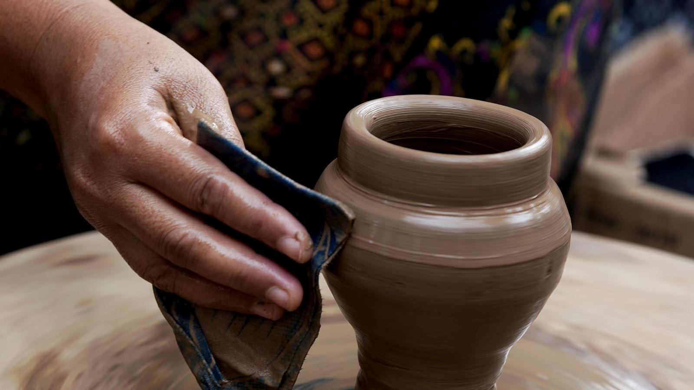
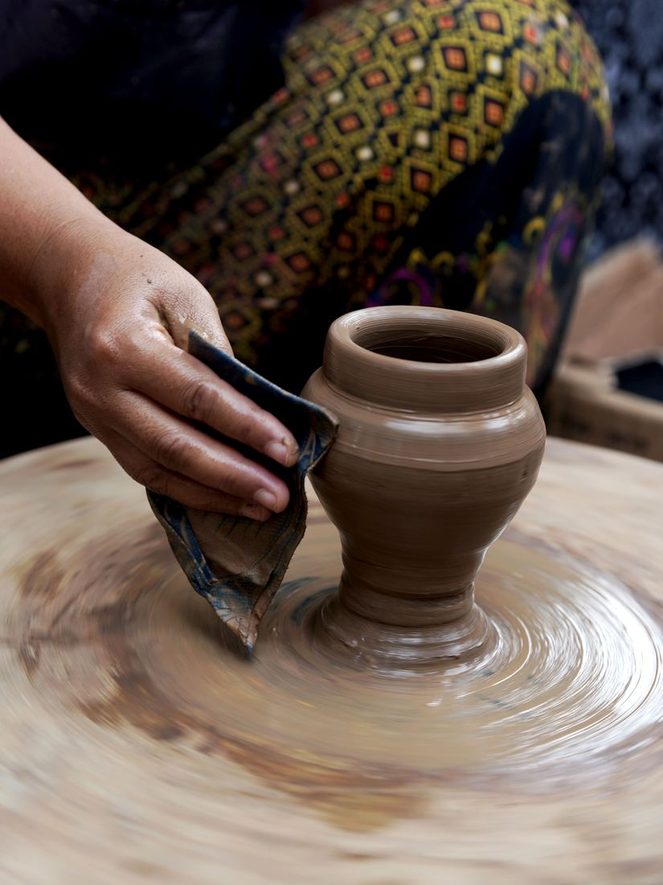
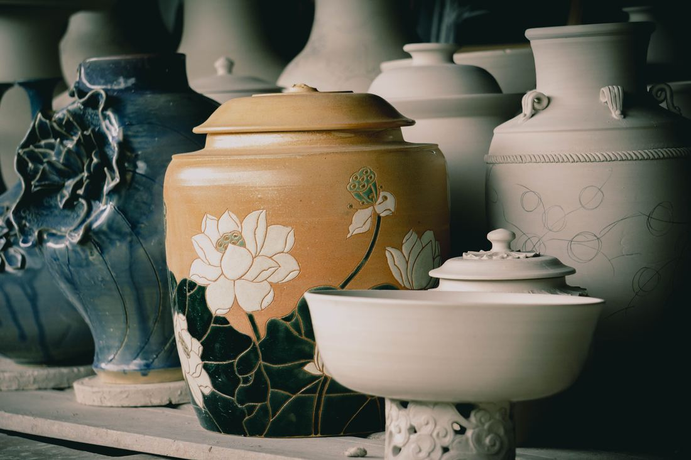
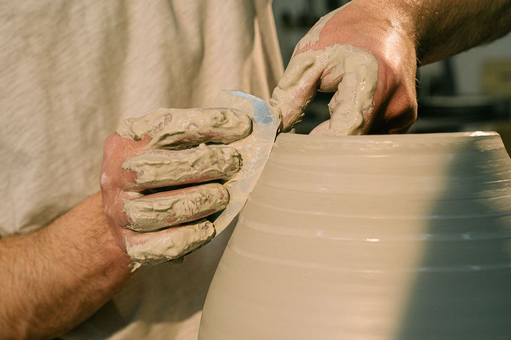
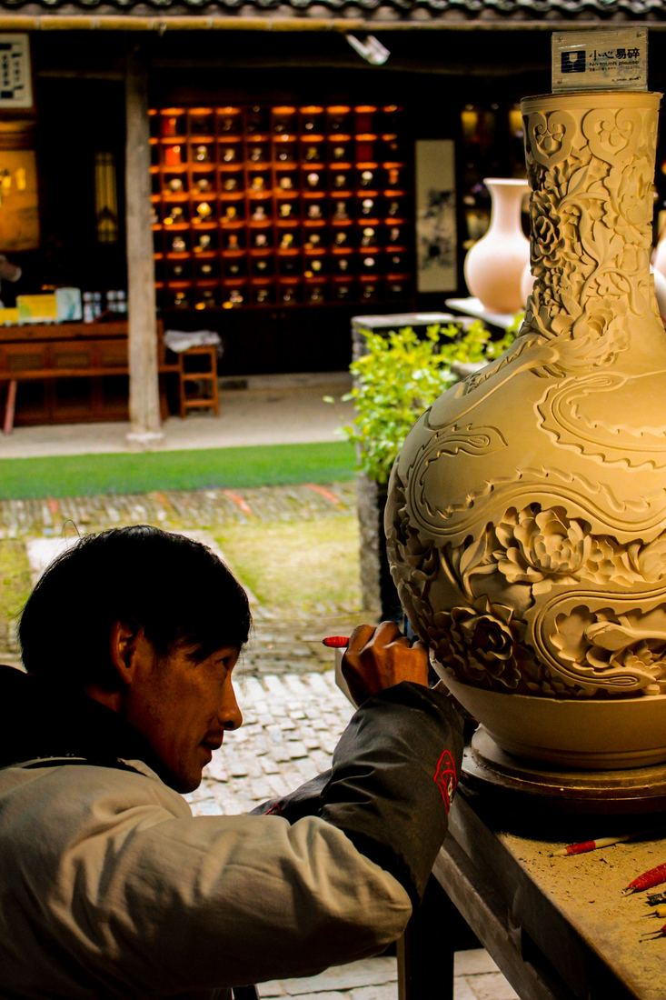
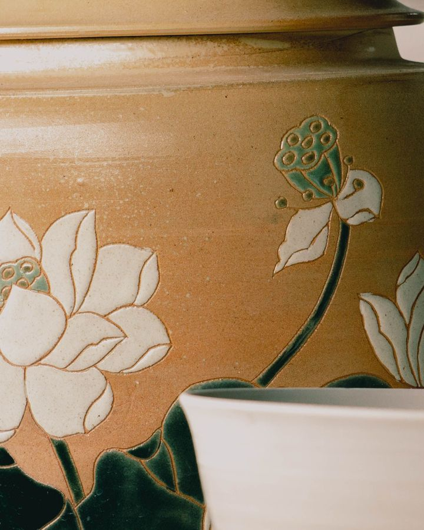

Glina i Vatra · Čačak
Radionica u Čačku. Svaki komad se izvuče rukom, osuši, peče dva puta i glazira. Nema kalupa i nema dve iste stvari.
Pitaj za komadRadovi
Klikni na sliku za uvećanje. Strelicama se prolazi kroz galeriju.




Radionica
Radionica radi od 2016. u jednoj prostoriji sa dva kola i jednom peći. Sve što vidite gore prošlo je kroz iste ruke — od grumena gline do glazure.
Dođite da probate. Prvi čas je uvek isti: centriranje gline. Retko ko ga savlada iz prve i to je u redu.

Cenovnik
Glina, alat i pečenje su uračunati u čas. Rad nosite kući kad se ispeče, obično za deset dana.
Kontakt